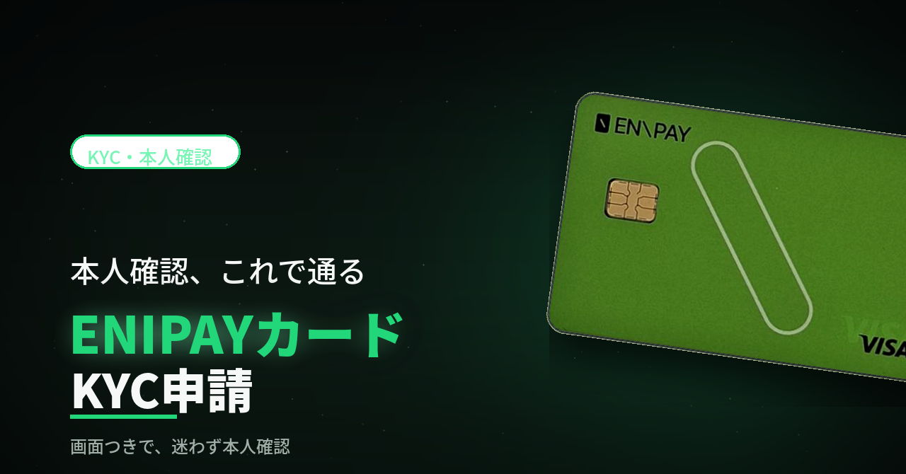

KYC・本人確認
ENIPAYカードのKYC申請（画面つき）
本人確認の申請手順を、個人情報・住所・身分証番号・書類アップロードまで、実際の画面つきで順番に解説しています。カードを実際に使うにはこの本人確認が必須です。
KYC申請マニュアルPDFを開く →開かない場合はこちら：enipay-kyc-manual.pdf

本人確認の申請手順を、個人情報・住所・身分証番号・書類アップロードまで、実際の画面つきで順番に解説しています。カードを実際に使うにはこの本人確認が必須です。
KYC申請マニュアルPDFを開く →開かない場合はこちら：enipay-kyc-manual.pdf